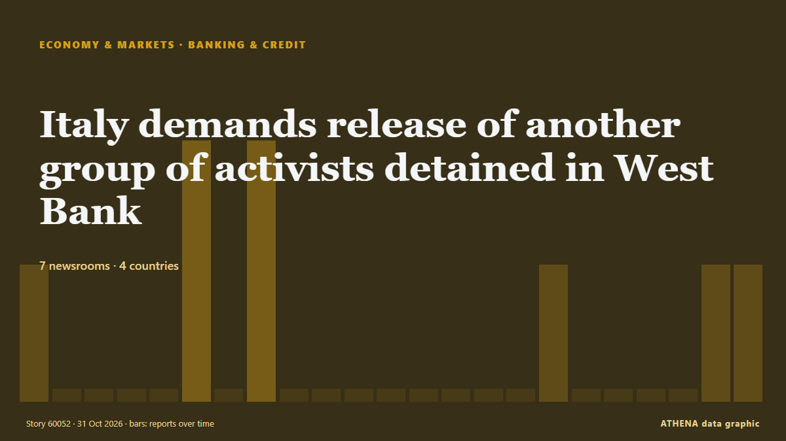

Banques et crédit
| 18 oct. | 0 |
|---|---|
| 19 oct. | 0 |
| 20 oct. | 0 |
| 21 oct. | 0 |
| 22 oct. | 0 |
| 23 oct. | 0 |
| 24 oct. | 0 |
| 25 oct. | 3 |
| 26 oct. | 4 |
| 27 oct. | 4 |
| 28 oct. | 7 |
| 29 oct. | 2 |
| 30 oct. | 3 |
| 31 oct. | 0 |
Les titres sont affichés en anglais, tels que publiés.

Italy demands release of another group of activists detained in West Bank
(ANSA) - ROME, 30 OTT - The Italian Foreign Ministry has called for the "immediate release" of five Italian activists detained in the West Bank on Thursday while accompanying Palestinian farmers… de ANSA English
From Tata row to IDBI Bank sale: Rahul Gandhi vs Nirmala Sitharaman round 2
The Leader of Opposition in Lok Sabha also said “Indian business is not Modi and Shah’s plaything” de The Hindu
WA Labor MP sued for alleged $1 million unpaid loan in US
The MP is being sued in the United States Federal Court for more than $1 million. de Sydney Morning Herald
Bank of Japan to hold rates, signal further hikes
TOKYO: The Bank of Japan (BOJ) is set to keep interest rates steady on Friday but stress its focus on preventing underlying inflation from overshooting its two per cent target, suggesting scope to… de New Straits Times
Venezuelan leader demands Bank of England return gold
CARACAS, Venezuela (AFP) — Venezuelan interim president Delcy Rodriguez demanded Wednesday the return of her country's gold reserves held at the Bank of England, where they were frozen more than six… de Jamaica Observer
Israeli settlers threaten West Bank families, attack journalists
Palestinian families face threats of expulsion as armed settlers establish a new outpost, while activists and journalists report violent assaults. de The New Arab
Britain will not join Canada-led defence bank initiative
Oct 26 - Britain will not join the Canada-led Defence, Security and Resilience Bank, in a setback to efforts to create the world's first global defence bank, according to a person familiar with the… de The Straits Times
Nigeria’s president seeks parliament approval for about $21.7bn borrowing
Nigerian President Bola Tinubu has asked the National Assembly to approve a supplementary external borrowing plan worth $20.52 billion and €1.05 billion ($1.17 billion) for 2026-2027 to fund… de MyJoyOnline
Revolut takes on high street banks with launch of personal loans in UK
The unsecured loans, ranging between £2,000 and £25,000, offer ‘near-instant’ funds after approval. de Evening Standard (London)
In Anthropic I.P.O., Goldman and Morgan Stanley Slug It Out for Top Bank
Anthropic named the Wall Street firms lead underwriters on its upcoming public offering, a role that will generate generous fees and enormous prestige. de New York Times Business
Man Steals BD1,500 from Mother-in-Law’s Bank Account
He stole her money after helping her open an account. de News of Bahrain
Interest on loans to Ukraine to cost EU budget at least 35 bln euros — Politico
The EU will repay last year’s loan worth 90 billion euro after the conflict ends, but the interest rates are already weighing on the next budget. de TASS (English)
MAS urges banks to limit exposure or cut ties with clients over clear environmental breaches linked to haze
It expects lenders to look at material environmental risks arising from clients’ activities and exposures. de The Business Times
Indonesia, ILO launch decent work program for 2026-2030
The Ministry of Manpower and the International Labour Organization (ILO) signed a Joint Declaration on Indonesia's ... de Antara (English)
World Bank sees commodity prices up 23% in 2026 due to Middle East war, other shocks
WASHINGTON: Global commodity prices are set to surge 23% in 2026, the World Bank said on Wednesday, citing rising energy prices and disruptions to cargo shipping during the Middle East war, grain… de Business Recorder
S. Korean banks to tighten lending standards in Q4
SEOUL, Oct. 26 (Yonhap) -- South Korean banks are expected to maintain tight len... de Yonhap (English)
Israeli army kills 2 Palestinians in occupied West Bank shooting
West Bank: Palestinian youth injured, settlers attack cars, steal olive harvest A Palestinian youth suffered injury to the head due to a live-fire shrapnel during a raid by the Israeli military in… de Middle East Eye
4+ Massive Electrical Blasts Spark New Concerns Over LAX People Mover
New footage of an explosion in September is raising concerns over the infrastructure at LAX. de Simple Flying